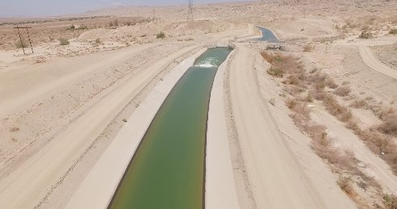

Imperial Valley (cultivated run-off)

Lukas Marxt
|
AU/DE 2018 K+S+P: Lukas Marxt – SD: Jung An Tagen – V: Sixpackfilm Website Lukas Marxt
|
Tuesday 16 oct 8.30 pm werkstattkino
The Imperial Valley represents one of California´s most important regions of industrial agriculture. The camera-laden drone rises into the air, where it follows the artificial waterway. Underscored by electronic film music, the images of monocultures look like abstract paintings.
Lukas Marxt Born in the Steiermark region of Austria in 1983, he studied geography and environmental system sciences in Graz until 2004. He then switched to audiovisual design at the University of Art and Design Linz. From 2007 to 2008 he studied art and multimedia at the Faculdade de Belas-Artes in Lisbon, Portugal. In 2009 he took up a postgraduate degree at the Academy of Media Arts Cologne and a masters at the Academy of Fine Arts (HGB) in Leipzig. Following the short film Fishing is not done on Tuesdays, co-directed with Marcel Odenbach, this marks the second outing for their collaborative work in competition in the Berlinale Shorts. He lives and works in Cologne and Vienna.
|
| Films Nach der Eishöhle 2007 – Reign of Silence 2013 – Wunderschön und ruhig gelegen 2015 – Captive Horizon 2015 (11. UX) – Cape Ground 2016 – Circular Inscription 2016 – Imperial Valley (cultivated run-off) 2018
|